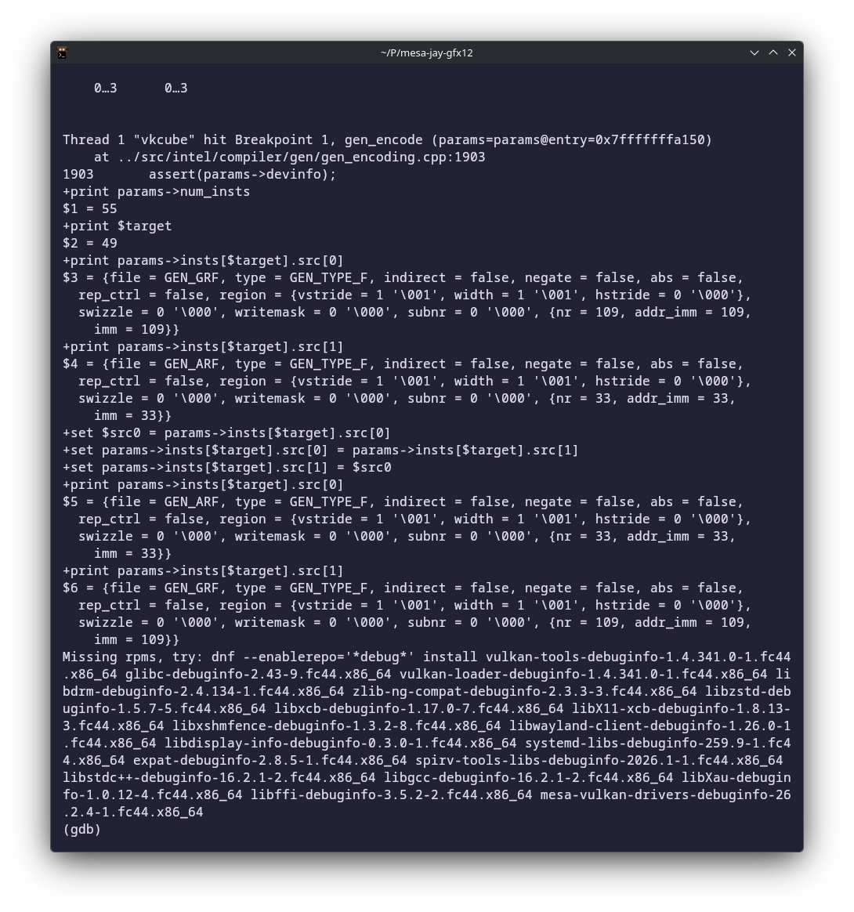
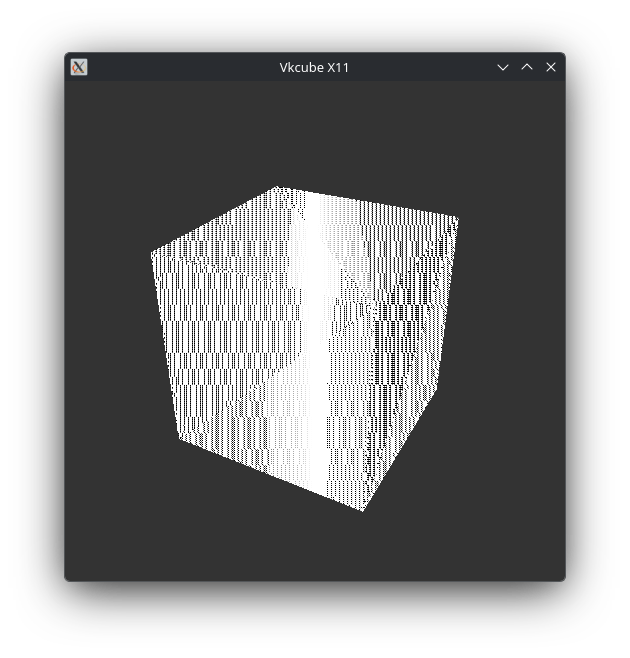
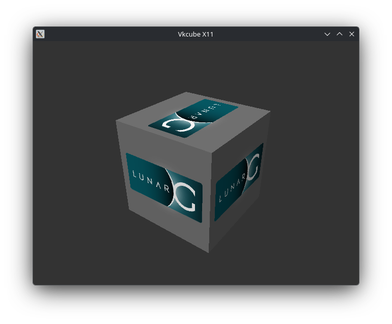

Bringing Jay to Intel Gfx12
Jay is Mesa's state-of-the-art shader compiler, built around SSA, a SIMT register model, and tree-scan register allocation. It was developed around newer hardware.
I emailed Alyssa looking for unowned Jay work. I did not have Xe2+ hardware, I explained, but I was planning to buy an Xe3 laptop.
She had a cheaper idea. Did I already have an older Intel GPU?
I did. She sent me a Gfx12.5 branch. This is how my Raptor Lake laptop became a compiler target.
This is the first step. Jay FS8 now renders vkcube on
Raptor Lake; SIMD16, SIMD32, vertex shaders and broader CTS coverage
are still open.
Code: my Gfx12 branch.
Thanks to Alyssa Rosenzweig for sharing her work-in-progress branch, reviewing the patches, and helping me find a useful starting point.
Why Jay is interesting
Intel's GPU ISA is explicitly SIMD. It has source regions, strides, and register-layout rules that get particularly awkward when control flow diverges. Modelling all of that directly increases register pressure and calls for expensive allocation algorithms. Not an especially welcoming place for a simple register allocator.
The part that caught my attention was Jay's approach to register allocation. SSA tree scan on Intel? With all those regioning rules? Jay essentially puts off dealing with them. It works with a simpler per-lane SSA model, separates spilling from register assignment, and partitions the physical register file by stride before assigning logical values to it. Braun–Hack and Colombet et al. turn up in the spilling and register-assignment pieces. Alyssa goes through the details in her Jay presentation.
I like that idea: let most of the compiler work with a machine that's easier to reason about, then deal with Intel's peculiarities where you have to. Of course, the real hardware still gets a vote.
A cube that hangs the GPU
BRW, Mesa's existing Intel compiler, rendered vkcube. Jay
FS8 hung, and i915 reset the context.
Jay's debug table had JAY_DEBUG=noacc, which skips
accumulator substitution. I tried it. The full cube rendered.
INTEL_JAY=fs INTEL_SIMD_DEBUG=fs8 vkcube
# GPU hang
JAY_DEBUG=noacc INTEL_JAY=fs INTEL_SIMD_DEBUG=fs8 vkcube
# rendersInteresting, but the full shader did a little bit of everything: texture sampling, sRGB conversion, lighting. Turning off a whole pass had changed too much. I needed a smaller hang.
Making the hang smaller
Removing sRGB conversion changed nothing. If I kept the texture but bypassed lighting, the cube rendered. If I kept the lighting and replaced the texture with white, it still hung. Fine. Texture sampling could leave.
The lighting-only shader kept the useful contrast: it hung normally
and rendered with noacc. Both ISA dumps still had
rsq, so reciprocal square root by itself was not the
problem. What changed around it were the accumulator rewrites.
I put the same arithmetic into VkRunner. Watching a cube spin is enough to spot a hang; 256 checked pixels are much better at catching a wrong answer. That distinction would matter later.
Why look at acc3?
The accumulator-enabled ISA includes this line:
mul.f32 acc0, acc3, acc3
I noticed acc3 appearing twice in a MUL. Was
that too many accumulators for this generation? Was reading one twice
illegal? Or did the source slot matter? I didn't know yet. Those
possibilities gave me a few small changes to try.
With an accumulator in MUL source 1, the reduced shader
hung. Replacing acc1 with acc0 didn't help.
Moving acc0 to source 0 did. So it wasn't just the
accumulator number. That made me want to swap the operands without
changing the rest of the compiler's choices.
mul.f32 dst, grf, acc1 # hangs
mul.f32 dst, grf, acc0 # hangs
mul.f32 dst, acc0, grf # completesChanging the instruction in GDB
I stopped in GDB at gen_encode, after register
allocation, and swapped the two complete MUL source
operands. The no-op breakpoint still hung. The actual swap let the
reduced shader run. In the original cube I had to swap all five
matching multiplies before it survived 120 frames. The destination,
instruction order, and scoreboard information stayed put.
before: mul.f32 acc1, r20, acc1
after: mul.f32 acc1, acc1, r20
gen_encode with the lighting-only shader.
GDB shows source 0 changing from GRF 109 to accumulator 33, and
source 1 changing in the other direction. The next
continue rendered the textureless cube below.
The swap let the lighting-only shader finish. With texture sampling deliberately gone, this is exactly what it was supposed to draw:

That was enough to send me back to the Tiger Lake PRM (Volume 9). Its general accumulator rule says source 0 only, while the MUL/MAC passage appears to permit source 1 too. I couldn't reconcile those passages from the text alone. On this Raptor Lake GPU, at least, the source-1 version hung and the source-0 version ran.
The cube was not a correctness test
The cube ran now. Great. But my VkRunner test still got 50 of its 256 pixels wrong.
The other bad instruction was a MAD with an accumulator
in source 2. A MUL source-1 accumulator hung the GPU; a
MAD source-2 accumulator let it run and quietly returned
wrong pixels. Same pass, two very different ways to ruin my afternoon.
The offending pair was:
mul.f32 acc0, r10, 0x3d800000
mad.f32 r16, u0, acc0, acc0
This time the PRM was clearer: rule 5 on printed page 493 (PDF page
497) forbids an accumulator in source 2 of a three-source instruction.
Rejecting that substitution took VkRunner from 50 wrong pixels to
256/256 correct. The derivative-light test passed too, and
vkcube completed 120 frames.
Probe color at (12,13)
Expected: 0.818166 0.818166 0.818166 1.000000
Observed: 1.038250 1.038250 1.038250 1.000000
PIGLIT: {"result": "fail"}With the source-2 restriction:
PIGLIT: {"result": "pass"}The first cube runs
There was one more limit on Raptor Lake: accumulator capacity. With
capacity four, the original cube still hung; with capacity two, it ran
for 120 frames. That first cube needed three restrictions: no
accumulator in MUL source 1, none in
MAD source 2, and the smaller Gfx12.0 accumulator pool.

CTS had other ideas
I tried a CTS test. Apparently the cube had been too polite.
fragcoord_xyz passed with BRW, failed with Jay, and
passed again with noacc. Back to the accumulators.
I went back through the PRM and compared BRW's validation rules with
IGC's accumulator substitution pass. The restrictions needed to cover
more than the MUL and MAD instructions in my
cube. I extended the source-position checks to two- and three-source
instructions, prevented different accumulator sources from being
mixed, and checked that accumulator sources and destinations matched.
MAD is not MAC
One case brought back an earlier question: was reading the same
accumulator twice illegal after all? A repeated-source
MAD produced the right result:
mad r, acc0, acc0, r3 # correct
Jay could turn that into the shorter MAC. I forced the
change in GDB so everything else stayed the same:
mac r, acc0, r3 # wrong; MAC also reads implicit acc0
So using the same accumulator twice was not the problem. The
instruction was. The MAD reads two explicit
acc0 sources; the MAC also brings in its
implicit accumulator source. Jay now keeps the repeated-source
MAD, but does not make that conversion when it would
leave an explicit accumulator behind.
The current limit
The local Jay test binary passes all 31 tests, along with the focused Raptor Lake FS8 hardware tests. That is still one fragment-shader path at SIMD8, not complete Gfx12 support. Broader CTS, SIMD16, SIMD32, and the other shader stages remain open.